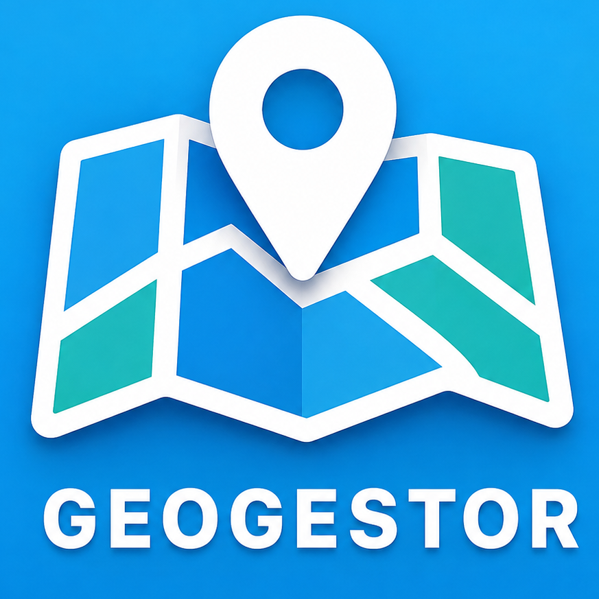

Área de Impressão (A4)
crop_free

mapCarregando ambiente de trabalho...
Selecione quais imagens de drone ativar nas camadas
Renomeie os campos identificados ou deixe como estão.
Associe os valores originais do arquivo com as opções do formulário.
Carregando...
Carregando Globo 3D Cesium...
Processando...
—